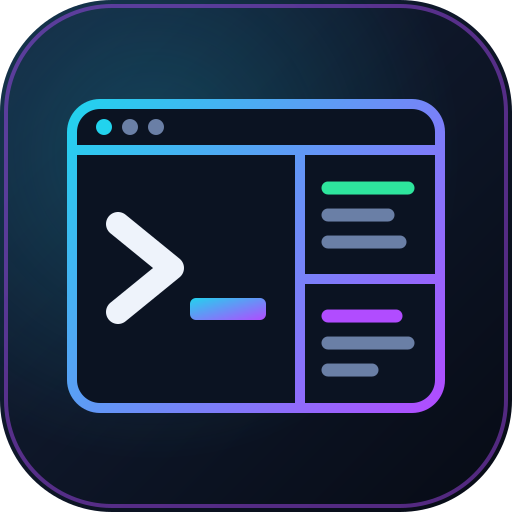
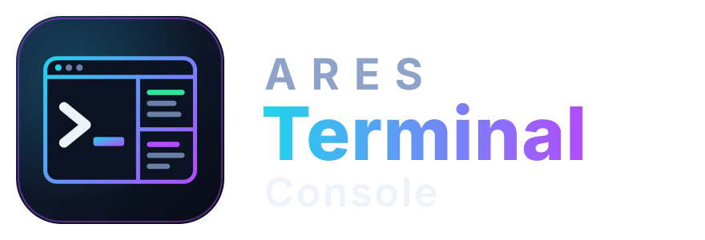

ARES Application Suite
The terminal for the people who run our servers: it remembers, diagnoses, and never acts on its own.
Version 2.3.0 · 16 November 2026 · Alfredo Nacino

The problem
The solution
Splits like tmux, one tab per connection, broadcast when you mean it.
Every connection and command, with time, pane and server.
Seven read-only diagnostics on any SSH pane.
Suggests the command. A person presses Enter.
Formerly Apex Terminal. Desktop app, Docker image and ApexBuild module from one codebase.
Panes, tabs and broadcast
Ctrl+Shift+D / E splits; closing a pane closes the gap.Nothing is lost
Optional anti-idle keeps the far end from timing out a quiet session. Off by default, and the pane says when it is on.
The record
| Commands | Every command line sent, with time, pane and server. Searchable; Insert puts one back on a prompt. |
| Servers | Every SSH destination: sessions, durations, commands sent. Connect reopens it. |
| History | Every connection opened; name one to keep it under Saved. |
| Never stored | Passwords: input that wasn't echoed is skipped, and --password-style secrets are blanked. |
Server tools · ◈ server · Ctrl+Shift+X
CPU, memory, disk, load, network; top processes.
What is slow, and why.
Errors grouped and counted.
Verdict, cause, first command.
Runtimes, servers, databases.
Security updates, CVEs (OSV.dev).
Every scan of this machine.
The same seven for this computer.
Nothing installed, nothing changed
ssh admin@db1: password or one-time code typed once.
OpenSSH multiplexing: no second login, no second prompt.
sh -s: nothing copied, nothing left behind.
A server is recognised by its machine identity, so the same box by name, IP or jump host has one history.
The assistant
Consent and security
The exact text is shown first, with secrets as ***, no address and no server identity. It's sent only on Send.
The desktop app and Docker image always require one. It becomes an HttpOnly, SameSite=Strict cookie.
WebSocket Origin is checked, and framing is refused except by ApexBuild.
History and reports live on the operator's computer. Nothing goes to a central service.
Where it runs
| Desktop | Linux (native Qt window, .deb, Arch, tarball) · macOS Apple silicon · Windows (ConPTY, PowerShell) |
| Docker | The console in a browser; shells inside the container as an unprivileged user |
| ApexBuild | The terminal module, signed in by the suite |
| From source | Python 3.11 and nothing else: it opens on a machine already in trouble |
Releases are signed and published to ARES Repository; every build must pass --self-test.
Status and next steps
On Windows the server tools need an SSH key or agent, because its OpenSSH can't share a connection.